Streetball Gym: dribble focus, MetaHuman grandma, overnight training
Captured from the running game with the trained policies loaded in inference mode (ONNX through Unreal NNE), and from the editor. Every screenshot below comes from this build; nothing is mocked up.
Brains loaded in the build
The game loads one ONNX policy per skill family at startup and runs them every control step (50 Hz). A policy is only exported after it passes its gate (200 randomised episodes), so overnight checkpoints that failed are not in the build.
| Policy file | Skill | Gate | In the game |
|---|---|---|---|
balance.onnx | Stand, recover from pushes | 97.0 % (need 95) | Tier 1 |
locomotion.onnx | Walk to court waypoints | 96.0 % (need 90) | Tier 2 |
dribble.onnx (dribble_anchor10) | Stationary dribble, right hand | 100 % training gate; 98.7 % re-test (need 85) | Dribble Lab behaviour 1 (preview, not yet promoted through run_gate) |
dribble.onnx, same brain | Left hand, crossover, moving dribble | 0 % | Behaviours 2-4, labelled "untrained" |
scramble.onnx | Chase down a loose ball | 95.5 % (need 80) | After every lost ball |
| pickup (new) | Pick up a ball with both hands | 0 % (need 80) | Not in the build |
New mechanics
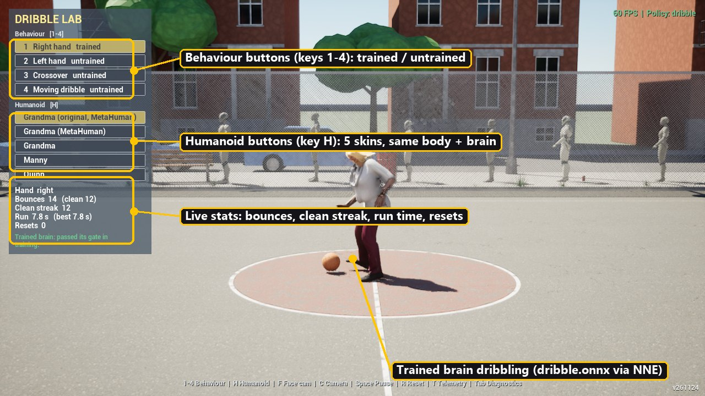
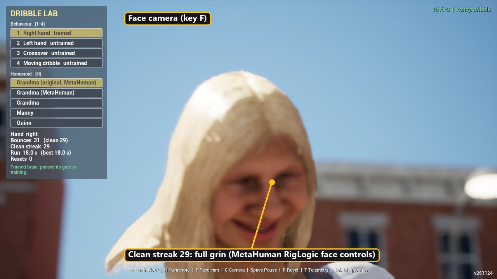
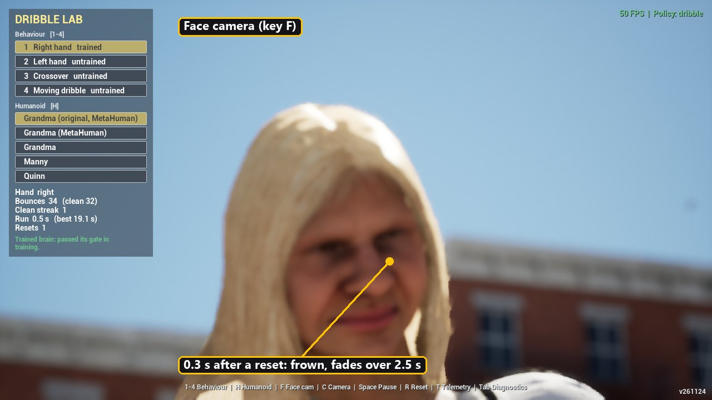
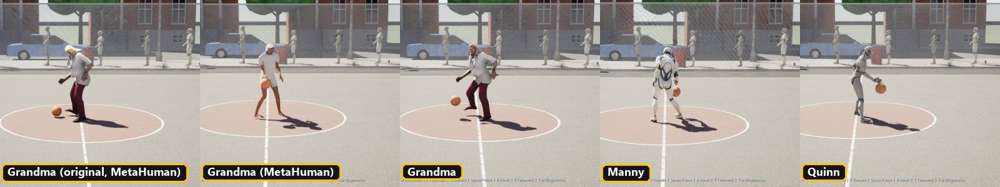
The smile and frown come from the live dribble: each clean bounce in a row raises the smile (full at 8); a lost ball or reset snaps to a frown that fades over 2.5 s. On the MetaHumans this drives 133 of Epic's face controls through RigLogic.
The original grandma, now a MetaHuman


Gameplay
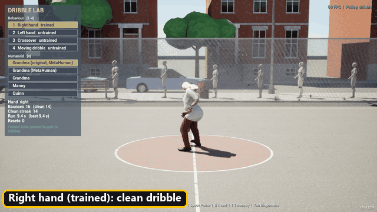
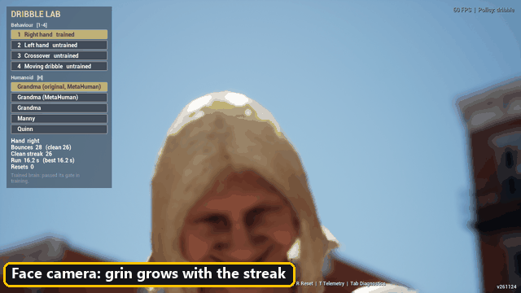
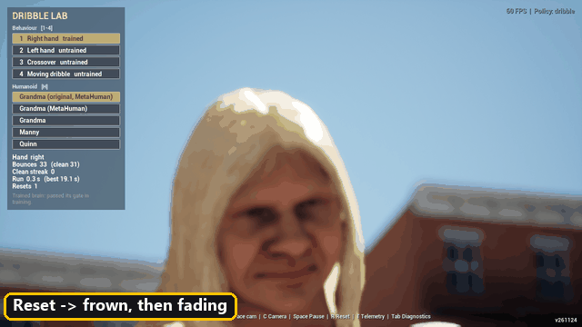
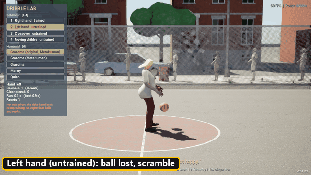
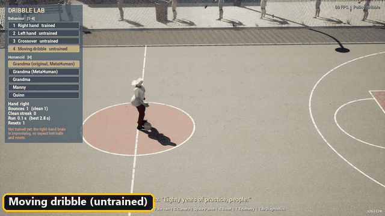
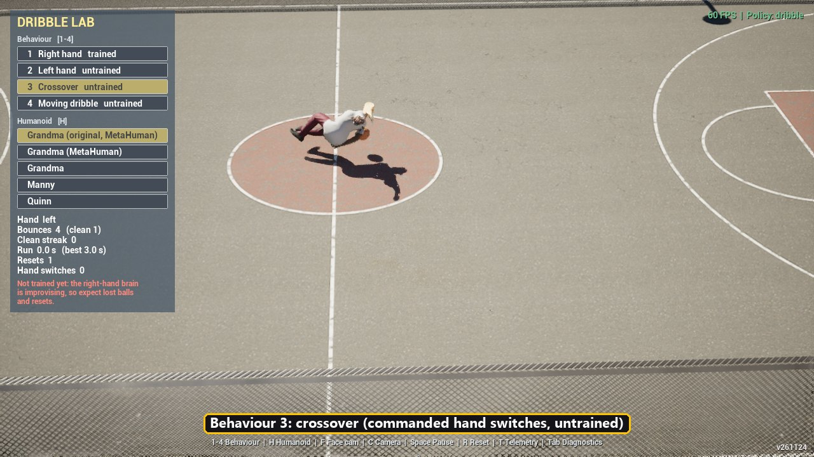
Behaviours 2-4 run on the right-hand brain, so they fail until they are trained. The panel says so in red rather than hiding them.
Editor: scene objects move with the gizmos, the game keeps working
The court, hoops, ball and humanoid are built from the MuJoCo scene when play starts (they are the physics), so they are not hand-placed in the level. Everything hand-placed can be moved with the gizmos. The test: move the neighbourhood and the sun, then Play-In-Editor.
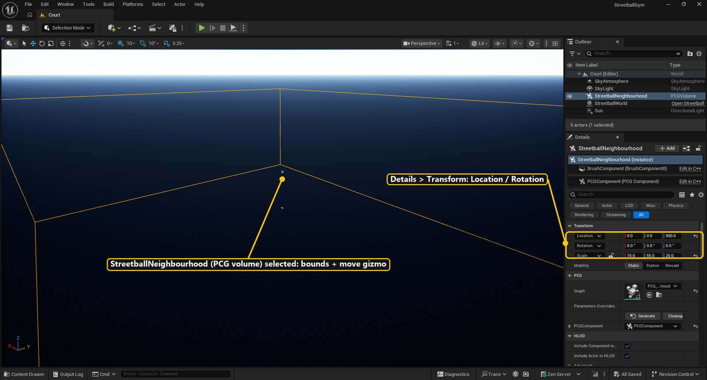
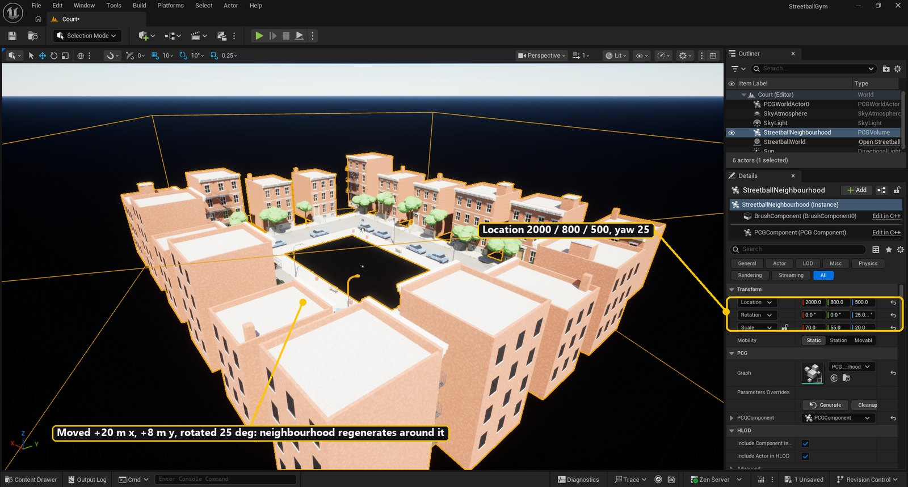
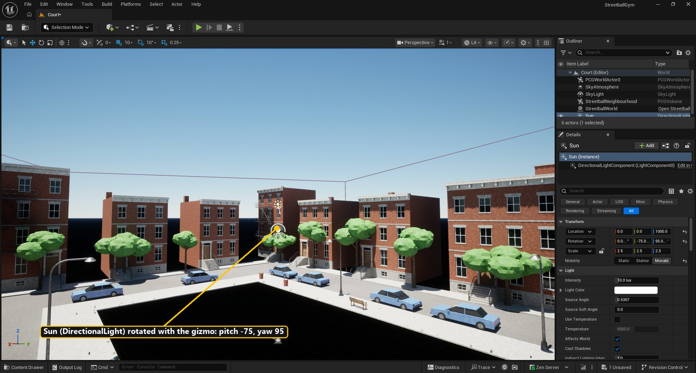
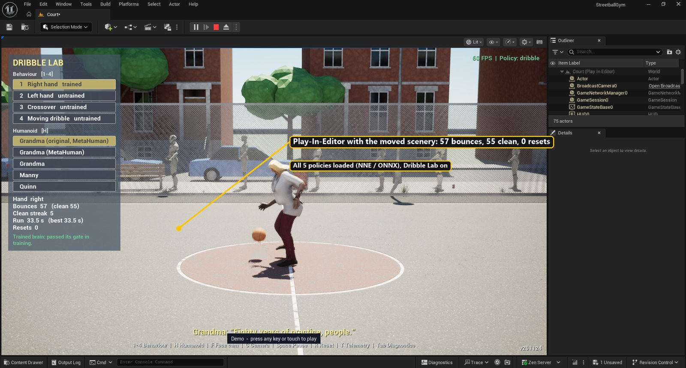
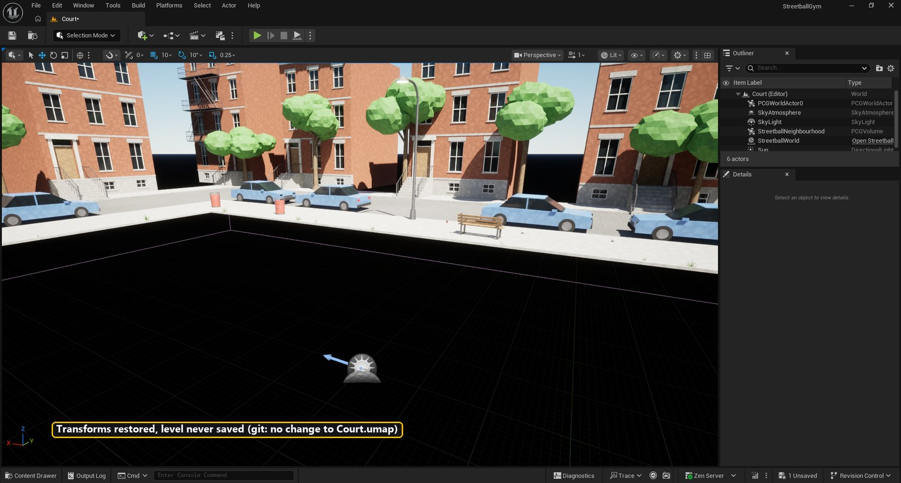
Training progress
Right-hand dribble (the skill that works)
| Run | Date | Best success | Gate (85 %) |
|---|---|---|---|
| dribble_time10d | 11-21 | 71.0 % | fail |
| dribble_45b | 11-21 | 72.5 % | fail |
| dribble_anchor10 | 11-22 | 100 % | pass (in the build) |
Overnight 11-24 to 11-25 (7.6 h on one RTX 2060)
| Stage | Started from | Best | What happened |
|---|---|---|---|
| Dribble with either hand | dribble_anchor10 + mirror loss | 47.5 % | Right hand 93.5 %, left hand 0 %: the mirror term did not teach the left hand |
| Dribble while walking | stage above | 0 % | Never reached a waypoint with the ball |
| Two-hand pickup (new level) | scramble brain | 0 % | Never got both palms on the ball; the reward for it was too sparse to find |
Next
- Left hand by mirrored copy: distil the right-hand brain and its exact mirror into one network, then fine-tune.
- Pickup: first a physics check that two fingerless palms can lift the ball, then a denser reward and a ball-at-the-feet curriculum.
- Walking dribble: retry from the two-handed brain.